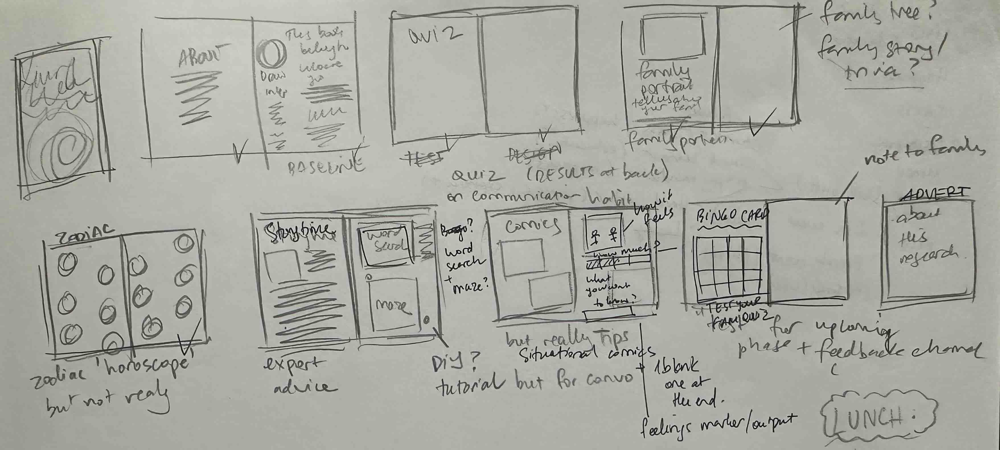
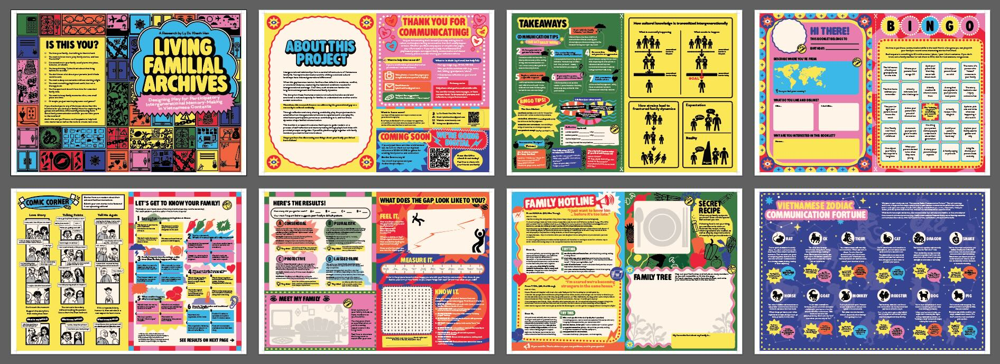

Objective
While the card game creates the condition for story sharing to happen, I also realised that many players may still need a softer entry point into the topic of communication itself. So, I wanted to design a printed artefact that people can casually read through, enjoy and keep, while gradually introducing them to useful conversation practices. Instead of presenting these ideas in a serious or instructional format, I wanted to disguise them inside a playful teen magazine structure that feels nostalgic, accessible and easy to digest. In this way, the activity book becomes both an extension of the prototype and a gentle primer for the kinds of communication skills that the larger project hopes to encourage.
Process Breakdown
Concept Development
The idea for this prototype came from my memory of reading teen magazines while growing up in Vietnam. I was interested in how these magazines package advice, personality quizzes, horoscope pages and silly interactive segments in a way that feels entertaining rather than educational. That felt like the perfect format for this phase of the project, because I wanted people to engage with conversation strategies without feeling like they were being lectured. By using a familiar and nostalgic editorial language, I could frame difficult interpersonal topics in a much more inviting way.
Planning the Content
Once I settled on the format, I started drafting the main sections of the magazine and thinking about what each type of page could do. I wanted the book to include all the recognisable elements of a teen magazine, but every section also had to serve the wider purpose of the project. So the quiz became a way for readers to reflect on their family communication patterns, the horoscope page reframed common communication tendencies into a playful format, the comics showed examples of escalating misunderstandings, and the activity pages encouraged readers to think through their own habits and possible responses. To bring all of this together, I ended the book with a bingo-style activity that lets players practise what they have read in a more active and social way. I also included a detachable page that summarises the key ideas into a small keepsake that readers can hold onto after finishing the magazine.
Researching the Material
Although the tone of the book is playful, the content itself still needed to be grounded in research. So I returned to academic sources on family communication, intergenerational dynamics and conversational strategies in order to shape the advice and activities. This part of the process was important because I did not want the book to read as a collection of random lifestyle tips. Instead, I wanted the lightness of the format to sit on top of ideas that are actually relevant to how people navigate difficult family conversations. Translating that research into digestible snippets was one of the main design challenges of this prototype.Designing and Producing the Book
After the structure and content were in place, I slowly designed the book page by page. Since the project relies heavily on tone, I had to balance being visually playful and nostalgic with still making the information legible and coherent. This meant thinking not only about the graphic style of the publication, but also about pacing, variation and how to keep readers curious as they move from one section to the next. Once I had a working version, I printed the activity book and asked people to read through it for feedback.
Initial Feedback
The early responses were encouraging. Readers found the concept memorable and thought the magazine format made them more willing to engage with the topic of communication practices. Several people commented that the project felt cool, unusual and much easier to approach than a conventional self-help or educational booklet. However, at this stage, no one has reported a definite increase in communication skill, which is not surprising. Communication habits take time to build, and this prototype is better understood as an entry point that creates interest, curiosity and openness, rather than as an instant intervention that produces measurable behavioural change overnight.Key Takeaways
- This prototype successfully translated communication strategies into a format that feels approachable, nostalgic and engaging, making readers more willing to spend time with the material.
- The activity book works well as a supporting artefact for the wider project, especially as a softer and more reflective entry point before players are asked to practise these skills more directly.